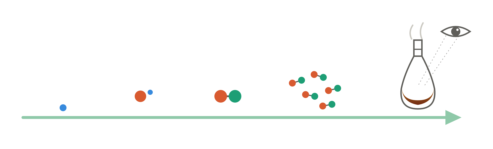
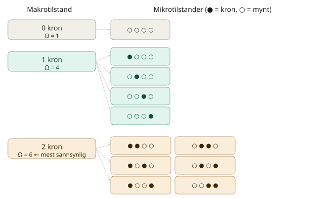
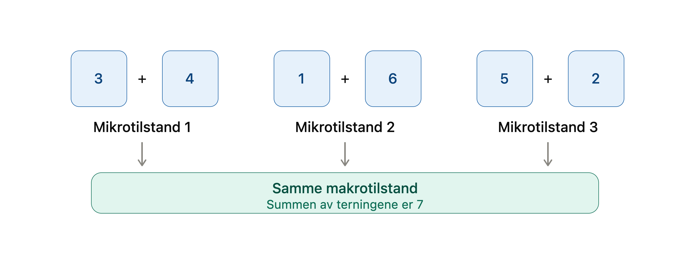
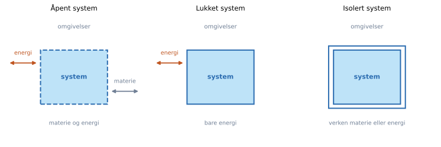
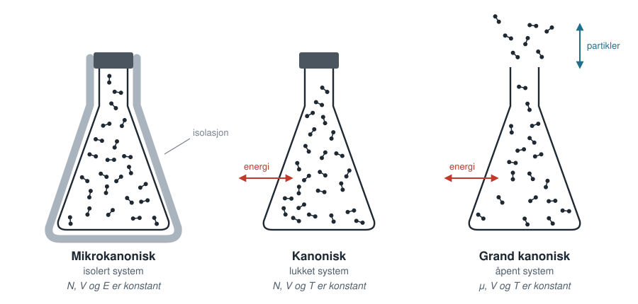
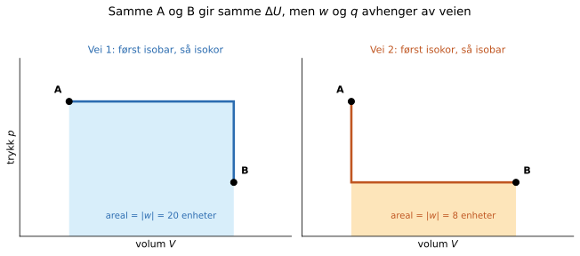
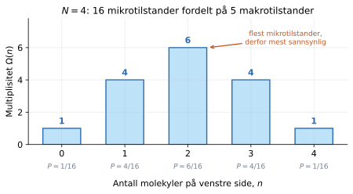

Fra molekyler til termodynamikk#
Læringsmål
Etter å ha arbeidet med dette kapitlet skal du kunne:
forklare forskjellen mellom en mikroskopisk og en makroskopisk beskrivelse av et system
forklare hva tilstandsvariabler, prosesser og tilstandsfunksjoner er
beskrive forskjellen mellom indre energi og energi som overføres som varme eller arbeid
forklare forskjellen mellom en mikrotilstand og en makrotilstand
bruke mikrotilstander og en enkel sannsynlighetsfordeling til å forklare hvorfor makroskopiske størrelser er stabile
gjøre rede for den grunnleggende sammenhengen mellom energi, entropi og temperatur
Hvorfor har en gass trykk? Hvorfor går varme fra en varm kaffekopp til rommet, og ikke motsatt? Hvorfor blander noen stoffer seg spontant, mens andre skiller lag? Og hvordan kan vi vite om en kjemisk reaksjon kan gå, før vi har prøvd den på laboratoriet?
Dette er ulike spørsmål, men de har en felles kjerne: Egenskapene vi observerer i laboratoriet (makronivå) oppstår fra bevegelsene, energiene og vekselvirkningene til et enormt antall atomer og molekyler (mikronivå). Fysikalsk kjemi handler i stor grad om å bygge bro mellom disse beskrivelsesnivåene.

Kapitlet i et nøtteskall
Tilfeldig bevegelse i et system på molekylnivå kan gi stabile og forutsigbare egenskaper på makronivå.
Hva kan fysikalsk kjemi hjelpe oss å forstå?#
Når vi studerer ulike prosesser i fysikalsk kjemi, er det noen spørsmål vi møter igjen og igjen:
Hvilken retning har en prosess? Vil en reaksjon gå mot produkter, vil en væske fordampe, eller vil to stoffer blande seg?
Hvordan utveksles energi? Hvor mye varme avgis, hvor mye arbeid kan utføres, og hvordan fordeles energien i systemet?
Hvor ender prosessen? Hvilke faser og hvilken sammensetning finner vi ved likevekt?
Hvor raskt går den? Hvilken mekanisme følger reaksjonen, og hva bestemmer reaksjonsfarten?
De tre første spørsmålene tilhører først og fremst termodynamikken. Det siste tilhører kinetikken. Skillet er viktig: En prosess kan være termodynamisk gunstig uten at den skjer merkbart raskt.
Termodynamikk og kinetikk
Termodynamikk beskriver energi, retning og likevekt. Den kan fortelle om en prosess kan skje og hvor systemet ender, men ikke hvor lang tid det tar.
Kinetikk beskriver hastighet og mekanisme. Den forteller hvor raskt en prosess skjer og hvilken vei den følger på molekylnivå.
Underveisoppgave
Bensin kan reagere med oksygen og danne karbondioksid og vann. Likevel kan bensin oppbevares i en lukket tank ved romtemperatur. Hvordan kan reaksjonen være termodynamisk gunstig uten at bensinen reagerer med en gang?
Løsningsforslag
Produktene kan være termodynamisk mer stabile enn reaktantene, slik at reaksjonen har en termodynamisk drivkraft. Reaksjonen har samtidig en energibarriere som gjør den svært langsom ved romtemperatur. En gnist gir noen molekyler nok energi til å passere barrieren. Termodynamikken beskriver retningen; kinetikken beskriver hvor raskt reaksjonen kommer i gang.
To beskrivelser av det samme systemet#
Tenk deg \(1 \text{ mol}\) argongass i en beholder. På laboratoriet kan vi beskrive gassen med noen få målbare størrelser, som vi kaller tilstandsvariabler, for eksempel trykk \(P\), volum \(V\) og temperatur \(T\). Dette er en makroskopisk beskrivelse.
Tilstandsvariabler
Tilstandsvariabler er størrelser som beskriver tilstanden til et system. Vi skiller mellom ekstensive og intensive størrelser:
En ekstensiv tilstandsvariabel avhenger av størrelsen til systemet. Eksempler er volum, masse, stoffmengde og indre energi.
En intensiv tilstandsvariabel er uavhengig av størrelsen til systemet. Eksempler er temperatur, trykk og tetthet.
På atomnivå består den samme gassen av \(N=N_\mathrm{A}\approx 6{,}022\times 10^{23}\) atomer. Hvis vi skulle beskrive alle disse partiklene med klassisk mekanikk, måtte vi oppgi tre posisjonskoordinater og tre hastighetskomponenter - én av hver for hver retning i rommet - for hvert eneste atom. Det gir \(6N_\mathrm{A}\approx 3{,}6\times10^{24}\) tall for å beskrive ett eneste øyeblikk. I tillegg endrer alle tallene seg kontinuerlig fordi atomene beveger seg, kolliderer og påvirker hverandre med krefter. En slik beskrivelse lar seg rett og slett ikke gjennomføre.
Heldigvis trenger vi ikke å vite hva hvert enkelt atom gjør for å forstå hvordan de makroskopiske størrelsene oppstår. Det vi trenger å vite, er hvilke mikrotilstander som er tilgjengelige, hvor sannsynlige de er, og hvilke makroskopiske størrelser vi får når vi tar gjennomsnittet av dem. Dette er kjernen i statistisk termodynamikk. I Grunnleggende begreper introduserte vi så vidt mikro- og makrotilstander, og nå skal vi se nærmere på disse.
Mikrotilstander og makrotilstander#
En makrotilstand beskriver systemet med størrelser vi kan måle i laboratoriet, som temperatur, trykk, volum og indre energi. En mikrotilstand er én fullstendig mikroskopisk beskrivelse av systemet innenfor modellen vi bruker. En makrotilstand kan derfor ha mange mulige tilhørende mikrotilstander, men i et gitt øyeblikk vil bare én bestemt mikrotilstand være realisert. Tenk på den som et øyeblikksbilde av alle molekylene i en gass.
Mikroskopisk:
Mikroskopisk nivå: når vi beskriver individuelle atomer eller molekyler.
Mikroskopisk egenskap: energier, posisjoner og hastigheter til individuelle atomer eller molekyler.
Mikrotilstand: den nøyaktige tilstanden til hvert enkelt atom eller molekyl i systemet. Det kan for eksempel være posisjoner og hastigheter eller hvilke energitilstander partiklene befinner seg i.
Makroskopisk:
Makroskopisk nivå: når vi beskriver et system som helhet, slik vi kan observere og måle det. Et eksempel er egenskapene til en gass i en beholder.
Makroskopisk egenskap: størrelser vi kan måle i laboratoriet, for eksempel temperatur, trykk, volum og indre energi.
Makrotilstand: systemets tilstand beskrevet av et sett makroskopiske størrelser. Mange ulike mikrotilstander kan gi den samme makrotilstanden.
La oss se på et enkelt eksempel utenfor molekylverdenen, der vi kaster fire mynter. Makrotilstanden «to kron» kan realiseres med \(\binom{4}{2}=6\) forskjellige mikrotilstander - avhengig av hvilke to mynter som viser kron. Makrotilstanden «fire kron» har bare én mikrotilstand. Dette har vi illustrert nedenfor. Der er antallet mikrotilstander vist for makrotilstandene «ingen kron», «én kron» og «to kron».

Underveisoppgave
Skriv makrotilstandene som mangler i figuren ovenfor, og tegn alle mulige mikrotilstander for disse makrotilstandene. Hint: Vi trenger egentlig ikke å regne ut noe for å vite hvor mange det blir. Hvorfor?
Løsningsforslag
Makrotilstandene som mangler, er «tre kron» og «fire kron». Tre kron kan realiseres på fire måter, analogt til én kron ovenfor. Fire kron kan bare realiseres på én måte. Figuren er symmetrisk fordi det finnes like mange måter å velge hvilke mynter som viser kron, som hvilke mynter som viser mynt.
La oss se på enda et eksempel. Tenk deg at du kaster to terninger. Det du bryr deg om, er summen av øynene - dette er makrotilstanden. Men det finnes mange forskjellige kombinasjoner av terning 1 og terning 2 som gir akkurat samme sum. Hver slik kombinasjon er en egen mikrotilstand, men de gir samme makrotilstand.

Én eller flere mikrotilstander kan altså tilsvare en makrotilstand, men du kan ikke gå andre veien og forutsi den presise mikrotilstanden fra makrotilstanden. Hvis du bare vet at summen er 7, vet du ikke om det var \((3,4)\), \((1,6)\) eller \((5,2)\) som ble kastet.
Vit hva systemet ditt er:
Vi kan velge å se på et system som består av én terning. Hvis den observerbare størrelsen er antallet øyne, har systemet seks mikrotilstander og seks tilsvarende makrotilstander.
Vi kan også velge å se på et system som består av to terninger, som i figuren. Da blir det betydelig flere mulige mikrotilstander, og flere av dem kan gi opphav til samme makrotilstand.
Bryr vi oss om hvilken av de to terningene som viser hvilket tall? Eller bryr vi oss bare om summen? Det avhenger av spørsmålet vi ønsker å svare på, men vi er nødt til å velge før vi teller tilstander. Det er derfor viktig å være tydelig på hva systemet er, hva vi observerer, og hvilken modell vi bruker.
Mikrotilstander og energi#
I eksemplene med mynter og terninger var det enkelt å liste opp de mulige mikrotilstandene. For at vi skal kunne bruke de samme ideene på atomer og molekyler, må vi vite litt om hvilke mikroskopiske tilstander som er mulige.
På atom- og molekylnivå er mange former for energi kvantisert. Det betyr at et atom eller molekyl ikke kan ha vilkårlige verdier av for eksempel rotasjons-, vibrasjons- eller elektronisk energi, men bestemte tillatte energier. Disse kaller vi energinivåer.
Vi kan for eksempel tenke oss et enkelt system med energiene
Forskjellen mellom to energinivåer kalles et energigap.
En mikrotilstand beskriver mer enn bare energien. To forskjellige mikrotilstander kan derfor ha samme energi. Hvis flere mikrotilstander har samme energi, sier vi at energinivået er degenerert.
Kjerneidé
Kvantemekanikken bestemmer hvilke mikroskopiske tilstander og energier som er mulige. Statistisk termodynamikk beskriver hvordan systemet fordeler seg mellom disse mikrotilstandene.
Vi trenger ikke å beregne energinivåene kvantemekanisk her. I de neste kapitlene skal vi i stedet ta de mulige energiene som gitt og undersøke hva de betyr for entropi, temperatur og sannsynlighet.
System og omgivelser#
Før vi kan gå videre til å beskrive prosesser i neste delkapittel, må vi bestemme hva vi studerer. Vi trekker en fysisk eller tenkt grense rundt en del av universet og kaller denne delen systemet. Alt utenfor grensen er omgivelsene. I tillegg ønsker vi å si noe om vekselvirkningene mellom systemet og omgivelsene:
Systemtyper
Et åpent system kan utveksle både materie og energi med omgivelsene.
Et lukket system kan utveksle energi, men ikke materie, med omgivelsene.
Et isolert system utveksler verken materie eller energi med omgivelsene.

Systemgrensen er et valg vi gjør. Dersom vi undersøker en reaksjon i en kolbe, kan systemet være reaksjonsblandingen, hele kolben eller kolben sammen med et vannbad. Valget avgjør hvilke energi- og stoffstrømmer vi må ta med i modellen.
Underveisoppgave
En lukket kaffekopp med varm kaffe avkjøles på et bord. La kaffen være systemet.
Kan materie krysse systemgrensen?
Kan energi krysse systemgrensen?
Er systemet åpent, lukket eller isolert?
Løsningsforslag
Hvis koppen er tett, krysser ikke materie grensen. Energi overføres derimot som varme fra kaffen til koppen og rommet. Systemet er derfor lukket, men ikke isolert.
I statistisk termodynamikk skiller vi også mellom ulike systemer ut fra hva systemet kan utveksle med omgivelsene. Vi skal se hvorfor dette er viktig å presisere seinere.
Tre systemtyper
Mikrokanonisk (\(N\), \(V\), \(E\)): et isolert system. Energien, volumet og antallet partikler er konstante, og alle mikrotilstander med denne energien er like sannsynlige.
Kanonisk (\(N\), \(V\), \(T\)): et lukket system i termisk kontakt med omgivelsene. Antallet partikler er konstant, mens energien varierer rundt en middelverdi satt av temperaturen.
Makrokanonisk (\(\mu\), \(V\), \(T\)): et åpent system. Både energi og partikler utveksles med omgivelsene, og i stedet for \(N\) er det kjemiske potensialet \(\mu\) som holdes fast.
Vi kommer stort sett til å bruke det kanoniske tilfellet, siden mange lukkede systemer i laboratoriet kan beskrives ved tilnærmet konstant temperatur.

Prosesser og tilstandsfunksjoner#
Når én eller flere av tilstandsvariablene endrer seg, har systemet gjennomgått en prosess. En gass kan for eksempel gå fra en starttilstand med \((P_i,V_i,T_i)\) til en sluttilstand med \((P_f,V_f,T_f)\). Endringen i en størrelse \(X\) skriver vi som
En prosess beskriver altså en overgang mellom to tilstander. Men overgangen kan skje på forskjellige måter. En gass kan komprimeres raskt eller sakte, med god eller dårlig varmeutveksling med omgivelsene. Start- og sluttilstanden kan være de samme selv om veien mellom dem er forskjellig. Dette gir opphav til tilstands- og stifunksjoner.
Tilstandsfunksjon og stifunksjon
En tilstandsfunksjon har en verdi som bare avhenger av systemets tilstand. Endringen avhenger derfor bare av start- og sluttilstanden, ikke av veien mellom dem. Indre energi \(U\), entalpi \(H\), entropi \(S\) og Gibbs-energi \(G\) er tilstandsfunksjoner.
En stifunksjon beskriver energi som overføres under selve prosessen, og avhenger av veien mellom start- og sluttilstanden. Varme \(q\) og arbeid \(w\) er stifunksjoner.
Et intuitivt eksempel er en fjelltur. Høydeforskjellen mellom dalen og toppen er den samme uansett hvilken sti vi velger. Endringen i gravitasjonell potensiell energi er derfor bestemt av start- og sluttpunktet. Arbeidet vi utfører og varmen kroppen avgir, kan derimot avhenge av om stien er kort og bratt eller lang og slak.
Det samme gjelder for en gass. Figuren under viser to veier mellom de samme tilstandene A og B. Arealet under kurven svarer til arbeidet, og det er tydelig forskjellig for de to veiene. Fordi \(\Delta U\) er den samme, må varmen \(q\) kompensere for forskjellen.

Vi bruker ulike begreper om forskjellige prosesser. Disse begrepene forteller oss hvilken betingelse som holdes konstant under prosessen:
Prosess |
Hva holdes konstant? |
Betingelse |
|---|---|---|
isoterm |
temperatur |
\(\Delta T=0\) |
isokor |
volum |
\(\Delta V=0\) |
isobar |
trykk |
\(\Delta P=0\) |
adiabatisk |
ingen varmeutveksling |
\(q=0\) |
Underveisoppgave
En gass går fra tilstand A til tilstand B langs to ulike veier. Langs den ene veien tilføres mye varme samtidig som gassen gjør mye arbeid. Langs den andre tilføres mindre varme og gassen gjør mindre arbeid.
Hvilken størrelse må ha samme endring langs de to veiene: \(U\), \(q\) eller \(w\)?
Løsningsforslag
\(\Delta U\) må være den samme fordi indre energi er en tilstandsfunksjon og start- og sluttilstanden er like. \(q\) og \(w\) kan være forskjellige fordi de avhenger av veien. Energiregnskapet må likevel gå opp for begge veiene.
Energi: hva kan systemet lagre og utveksle?#
Energi kan opptre i mange former og omdannes fra én form til en annen. I en forbrenningsmotor blir energi som lå i reaktantenes bindinger og vekselvirkninger omfordelt til molekylære frihetsgrader i produktene, særlig termisk bevegelse. Deler av denne energien forlater deretter systemet som mekanisk arbeid og varme. Den totale energien blir ikke borte, men ikke all energien kan omdannes til den formen vi ønsker.
På molekylnivå kan energi finnes som blant annet
translasjonsenergi når molekylene beveger seg gjennom rommet
rotasjonsenergi når molekylene roterer
vibrasjonsenergi når bindinger strekkes og bøyes
elektronisk energi knyttet til hvilken elektronisk tilstand atomene eller molekylene befinner seg i
potensiell energi knyttet til vekselvirkninger mellom atomene og molekylene, for eksempel kjemiske bindinger og intermolekylære krefter
For et molekylært system kan vi skjematisk skrive
Inndelingen er en modell, men den hjelper oss å se hvor systemet kan lagre energi. Indre energi \(U\) er den samlede mikroskopiske energien i systemet. Bevegelsesenergien og den potensielle energien til hele systemet som ett makroskopisk legeme regnes vanligvis ikke med i \(U\).
Om «energi lagret i bindinger»
Uttrykket kan være misvisende. Det krever energi å bryte en kjemisk binding, mens energi frigjøres når en binding dannes. En reaksjon avgir energi når dannelsen av nye bindinger og vekselvirkninger frigjør mer energi enn det som kreves for å bryte de gamle.
Et system kan få endret indre energi på to grunnleggende måter: ved at energi overføres som varme, eller ved at det utføres arbeid. Med den vanlige kjemiske fortegnskonvensjonen er termodynamikkens første lov
der \(q>0\) når varme tilføres systemet, og \(w>0\) når omgivelsene gjør arbeid på systemet.
Varme og arbeid er ikke noe systemet inneholder. De beskriver måter energi krysser systemgrensen på under en prosess. Når overføringen er ferdig, er energien en del av systemets indre energi.
Energi og termodynamikkens første lov
Energi kan ikke skapes eller ødelegges. Den kan overføres mellom system og omgivelser og omfordeles mellom ulike energiformer og mikroskopiske frihetsgrader. I et lukket system kan den indre energien bare endres ved at energi overføres som varme eller arbeid:
I et åpent system kan \(U\) i tillegg endres ved at materie krysser systemgrensen.
Underveisoppgave
Is ved smeltepunktet mottar varme og smelter uten at temperaturen øker. Har systemets indre energi økt, minket eller forblitt uendret?
Løsningsforslag
Den har økt. Energien brukes til å endre molekylenes vekselvirkninger og struktur når det ordnede isgitteret går over til flytende vann. Temperaturen trenger derfor ikke å øke selv om den indre energien gjør det.
Når tilfeldighet blir forutsigbar#
At molekylene beveger seg tilfeldig, betyr ikke at systemets makroskopiske oppførsel er uforutsigbar. Tvert imot blir statistiske mønstre svært stabile når antallet partikler er stort.
Vi begynner med en enkel modell. Fire navngitte molekyler, A, B, C og D, kan befinne seg i venstre eller høyre halvdel av en beholder. Hvert molekyl har to muligheter, så systemet har totalt
mikrotilstander. Hvis vi bare observerer hvor mange molekyler som er på venstre side, får vi fem makrotilstander:
Molekyler til venstre, \(n\) |
Multiplisitet \(\Omega(n)\) |
Sannsynlighet \(p(n)\) |
|---|---|---|
0 |
1 |
\(1/16\) |
1 |
4 |
\(4/16\) |
2 |
6 |
\(6/16\) |
3 |
4 |
\(4/16\) |
4 |
1 |
\(1/16\) |
Tabellen er vår første sannsynlighetsfordeling. Den viser alle verdiene størrelsen \(n\) kan ha, og hvor sannsynlig hver verdi er.

Figuren viser det samme som tabellen, men gjør det lettere å se formen på fordelingen.
Sannsynlighetsfordeling
En sannsynlighetsfordeling er en oversikt, for eksempel en tabell eller en funksjon, som viser hvordan sannsynligheten er fordelt mellom alle mulige utfall.
Sannsynlighetene må til sammen være 1, fordi ett av de mulige utfallene må inntreffe.
I denne modellen er venstre og høyre side like sannsynlige for hvert molekyl. Hver bestemte mikrotilstand har derfor sannsynligheten \((1/2)^N\). Antallet mikrotilstander med \(n\) molekyler på venstre side er
og sannsynlighetsfordelingen blir
Uttrykket teller hvor mange mikrotilstander som gir hver makrotilstand, og deler på det totale antallet mikrotilstander.
Makrotilstanden med to molekyler på hver side er ikke mer sannsynlig fordi molekylene søker mot midten eller prøver å fordele seg jevnt. Den er mer sannsynlig fordi den kan realiseres på flest måter.
Multiplisitet
Multiplisiteten \(\Omega\) er antallet mikrotilstander som er forenlige med en bestemt makrotilstand.
Når alle tilgjengelige mikrotilstander er like sannsynlige, er sannsynligheten for en makrotilstand proporsjonal med multiplisiteten:
Underveisoppgave
Bruk tabellen til å sammenligne disse hendelsene:
alle fire molekylene er på venstre side
to molekyler er på hver side
Hvor mange ganger mer sannsynlig er den andre makrotilstanden enn den første? Betyr svaret at en skjev fordeling er umulig?
Løsningsforslag
Sannsynlighetene er henholdsvis \(1/16\) og \(6/16\). En lik fordeling er derfor seks ganger mer sannsynlig enn at alle er på venstre side. Den skjeve fordelingen er likevel fullt mulig i et system med fire molekyler. Forskjellen mellom «usannsynlig» og «umulig» blir viktig når vi skalerer opp.
En mer systematisk innføring i matematikken bak sannsynlighetsfordelinger finnes i appendiksene Kombinatorikk og Sannsynlighetsfordelinger og statistikk. Resten av dette kapitlet krever bare den intuitive forståelsen vi har utviklet her.
Termodynamikkens lover – et makroskopisk veikart videre#
Vi har nå introdusert ulike systemer, mikro- og makrotilstander, og lagt det statistiske grunnlaget for statistisk termodynamikk videre. Dette gir oss et språk for å beskrive et system og hvordan det kan endre seg. De mest grunnleggende begrensningene for slike endringer oppsummeres i termodynamikkens fire lover.
Lovene er makroskopiske. De beskriver hva som er mulig, uten å ta utgangspunkt i hvilke atomer og molekyler systemet består av. Senere skal vi undersøke hvordan disse makroskopiske observasjonene kan forstås ved hjelp av molekylenes egenskaper og bevegelser.
Termodynamikkens nullte lov
Hvis to systemer hver for seg er i termisk likevekt med et tredje system, er de også i termisk likevekt med hverandre.
Denne loven gjør det mulig å bruke temperatur som et mål på termisk likevekt og ligger til grunn for hvordan et termometer fungerer.
Termodynamikkens første lov
Energi kan verken skapes eller forsvinne, men kan overføres mellom et system og omgivelsene som varme eller arbeid.
For et lukket system kan dette uttrykkes som
der \(U\) er systemets indre energi.
Termodynamikkens andre lov
Entropien til et isolert system kan ikke avta. Den er konstant for en reversibel prosess og øker ved en irreversibel spontan prosess.
For systemet og omgivelsene samlet kan dette uttrykkes som
Termodynamikkens tredje lov
Entropien til en perfekt krystall med én entydig grunntilstand går mot null når temperaturen går mot det absolutte nullpunktet.
Loven gir dermed et absolutt referansepunkt for entropi.
De fire lovene danner det makroskopiske rammeverket for termodynamikken. Nullte lov etablerer temperatur, første lov beskriver energibevaring, andre lov gir spontane prosesser en retning, og tredje lov gir entropien et referansepunkt.
Lovene forteller oss likevel ikke hvorfor systemer oppfører seg slik. For å forstå hvordan makroskopiske egenskaper oppstår fra molekylenes energi og fordeling, må vi gå over til en statistisk beskrivelse av stoffet. Det er utgangspunktet for statistisk termodynamikk.
Broa videre#
Vi har nå språket vi trenger for å gå fra molekyler til termodynamikk:
Fra mikro til makro
Den mikroskopiske modellen bestemmer hvilke tilstander og energier som er mulige. Statistisk mekanikk beskriver hvor sannsynlige tilstandene er. Termodynamikken beskriver resultatet vi kan måle.
Så langt har vi bare telt mikrotilstander som er like sannsynlige. Det gir et viktig spørsmål: Når en makrotilstand kan realiseres på mange flere måter enn en annen, hvordan kan vi uttrykke denne forskjellen som en målbar termodynamisk størrelse? I neste kapittel bruker vi multiplisiteten til å innføre entropi og temperatur. Derfra kommer vi fram til Boltzmann-fordelingen, som beskriver hvordan sannsynligheten fordeles mellom mikrotilstander med ulik energi.
Fortsett til entropi, temperatur og Boltzmann-fordelingen
Før du går videre
Prøv å forklare følgende med egne ord:
Hva er forskjellen mellom et åpent, et lukket og et isolert system?
Hva er en prosess, og hvorfor kan \(\Delta U\) være den samme langs to veier selv om \(q\) og \(w\) er forskjellige?
Hva er forskjellen mellom en mikrotilstand og en makrotilstand?
Hva forteller en sannsynlighetsfordeling?
Hvorfor er en makrotilstand med stor multiplisitet mer sannsynlig når mikrotilstandene er like sannsynlige?
Hva er forskjellen mellom indre energi, varme og temperatur?
Hva kan termodynamikken ikke fortelle oss om en reaksjon?
Hva er hovedbudskapet i termodynamikkens fire lover?